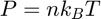
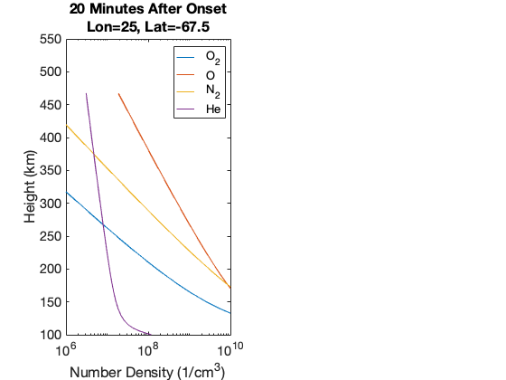

Open and plot variables from TIE-GCM netCDF files
struct m0: output from a baseline simulation w/ low F10.7 and Kp
struct m1: output with a step-increase to Kp at t=0
Contents
- Load TIE-GCM output netCDF files
- Plot the Temperature difference (m1-m0) on a pressure level
- Plot the Density ratio (m1/m0) on a pressure level
- Plot the Density ratio (m1/m0) at a fixed altitude
- Plot vertical profiles of number density after 20 minutes of simulation at the location of maximum (from Figure 3)
- Plot vertical profiles of number density after 1 day of simulation at the location of maximum (from Figure 3)
Load TIE-GCM output netCDF files
m0 is the baseline simulation (low F10.7 and Kp)
m0 = get_netcdf_variables('lowF107.lowKp/s080.nc');
m1 is the "disturbed" case, in which a step function in Kp is applied at t=0
m1 = get_netcdf_variables('lowF107.lowtohighKp/s080.nc');
increase figure font size
set(0,'defaultaxesfontsize',16);
constants
boltz = 1.38e-16; % Boltzmann constant as TIE-GCM uses m_O2=32;m_O1=16;m_N2=28;m_HE=4; % Molecular masses (AMU)
Plot the Temperature difference (m1-m0) on a pressure level
Desired pressure level
nlev = 25;
loop through model output times
for it = 1:size(m0.mtime,2), % calculate local time from longitude and UT time slt = mod([1,1/60]*double(m0.mtime(2:3,it))+m0.lon/15,24); % sort the data by local time [slt,islt] = sort(slt); % plot the ratio contourf(slt,m0.lat,(m1.TN(islt,:,nlev,it)-m0.TN(islt,:,nlev,it))',25,... 'edgecolor','none'); set(gca,'clim',[0,200],'xlim',[0,23.6667],'xtick',0:4:24); colorbar; % annotate plot xlabel('Local Time (hours)');ylabel('Latitude (deg)'); title({'Temperature Difference (K), m1-m0',... sprintf('Zp=%.2f, %02d:%02d UT, Day %d',... m0.lev(nlev),m0.mtime([2:3,1],it))}); % save plot %print(gcf,'-depsc2',sprintf('html/TNdiff_%02d',it)); end
Figure 1. Temperature difference at a fixed pressure level  .
.
Plot the Density ratio (m1/m0) on a pressure level
Desired pressure level
nlev = 25;
loop through model output times
for it = 1:size(m0.mtime,2), % calculate local time from longitude and UT time slt = mod([1,1/60]*double(m0.mtime(2:3,it))+m0.lon/15,24); % sort the data by local time [slt,islt] = sort(slt); % plot the ratio contourf(slt,m0.lat,(m1.DEN(islt,:,nlev,it)./m0.DEN(islt,:,nlev,it))',25,... 'edgecolor','none'); set(gca,'clim',[0.9,1],'xlim',[0,23.6667],'xtick',0:4:24); colorbar % annotate plot xlabel('Local Time (hours)');ylabel('Latitude (deg)'); title({'Density Ratio, m1/m0',... sprintf('Zp=%.2f, %02d:%02d UT, Day %d',... m0.ilev(nlev),m0.mtime([2:3,1],it))}); % save plot %print(gcf,'-depsc2',sprintf('html/DENratio_%02d',it)); end
Figure 2. Density ratio at a fixed pressure level .
Plot the Density ratio (m1/m0) at a fixed altitude
Desired height
height = 400e5; % (cm)
loop through model output times
for it = 1:size(m0.mtime,2), % calculate local time from longitude and UT time slt = mod([1,1/60]*double(m0.mtime(2:3,it))+m0.lon/15,24); % sort the data by local time [slt,islt] = sort(slt); % interpolate to fixed altitude in log-space [m0.den_alt,m1.den_alt] = deal(zeros(length(m0.lon),length(m0.lat))); % preallocate to avoid variables growing in for-loop for ilon = 1:length(m0.lon), for ilat = 1:length(m0.lat), m0.den_alt(ilon,ilat) = interp1q(squeeze(m0.ZG(ilon,ilat,1:end-1,it)),log(squeeze(m0.DEN(ilon,ilat,1:end-1,it))),height); m1.den_alt(ilon,ilat) = interp1q(squeeze(m1.ZG(ilon,ilat,1:end-1,it)),log(squeeze(m1.DEN(ilon,ilat,1:end-1,it))),height); end end % convert log-densities back to densities [m0.den_alt,m1.den_alt] = deal(exp(m0.den_alt),exp(m1.den_alt)); % plot the ratio contourf(slt,m0.lat,(m1.den_alt(islt,:)./m0.den_alt(islt,:))',25,... 'edgecolor','none'); set(gca,'clim',[1,1.65],'xlim',[0,23.6667],'xtick',0:4:24); colorbar % annotate plot xlabel('Local Time (hours)');ylabel('Latitude (deg)'); title({'Density Ratio, m1/m0',... sprintf('Height = %d km, %02d:%02d UT, Day %d',... round(1e-5*height),m0.mtime([2:3,1],it))}); % save plot %print(gcf,'-depsc2',sprintf('html/DENratio_alt_%02d',it)); end
Figure 3. Density ratio at a fixed altitude of 400 km.
Plot vertical profiles of number density after 20 minutes of simulation at the location of maximum (from Figure 3)
Starting with the ideal gas law, we want to calculate number density for species :

Substitute
Multiply both sides by the mass mixing ratio of species :
Substitute :
Solve for number density in terms of TIE-GCM output variables:
it = 1; % time index
calculate local time
slt = mod([1,1/60]*double(m0.mtime(2:3,it))+m0.lon/15,24);
find maximum density difference from previous plot after 1 day of simulation
[ilon,ilat] = find( max(max(m1.den_alt./m0.den_alt)) == m1.den_alt./m0.den_alt );
Calculate pressure on the midpoints (lev) as opposed to interfaces (ilev) for these variables:
P = m0.p0_model*exp(-m0.lev);
Calculate mean mass for baseline model m0
m0.HE = 1-m0.O2-m0.O1-m0.N2; % quick fix: I forgot to output HE in these files, woops
m0.mbar = 1./(m0.O2/32+m0.O1/16+m0.N2/28+m0.HE/4);
Calculate for baseline model m0 (ignore the upper 4 grid points for composition)
term = (1/boltz)*P(1:end-4).*squeeze(m0.mbar(ilon,ilat,1:end-4,it)./m0.TN(ilon,ilat,1:end-4,it)); m0.n_O2 = term.*squeeze(m0.O2(ilon,ilat,1:end-4,it))/m_O2; m0.n_O1 = term.*squeeze(m0.O1(ilon,ilat,1:end-4,it))/m_O1; m0.n_N2 = term.*squeeze(m0.N2(ilon,ilat,1:end-4,it))/m_N2; m0.n_HE = term.*squeeze(m0.HE(ilon,ilat,1:end-4,it))/m_HE;
Calculate mean mass for disturbed model m1
m1.HE = 1-m1.O2-m1.O1-m1.N2; % quick fix: I forgot to output HE in these files, woops
m1.mbar = 1./(m1.O2/32+m1.O1/16+m1.N2/28+m1.HE/4);
Calculate for disturbed model m1 (ignore the upper 4 grid points for composition)
term = (1/boltz)*P(1:end-4).*squeeze(m1.mbar(ilon,ilat,1:end-4,it)./m1.TN(ilon,ilat,1:end-4,it)); m1.n_O2 = term.*squeeze(m1.O2(ilon,ilat,1:end-4,it))/m_O2; m1.n_O1 = term.*squeeze(m1.O1(ilon,ilat,1:end-4,it))/m_O1; m1.n_N2 = term.*squeeze(m1.N2(ilon,ilat,1:end-4,it))/m_N2; m1.n_HE = term.*squeeze(m1.HE(ilon,ilat,1:end-4,it))/m_HE;
plot m0 and m1 profiles
subplot 121 semilogx([m0.n_O2,m0.n_O1,m0.n_N2,m0.n_HE],1e-5*squeeze(m0.ZGMID(ilon,ilat,1:end-4,it)),'--','linewidth',1); hold on; set(gca,'colororderindex',1); semilogx([m1.n_O2,m1.n_O1,m1.n_N2,m1.n_HE],1e-5*squeeze(m1.ZGMID(ilon,ilat,1:end-4,it)),'linewidth',1); xlabel('Number Density (1/cm^3)'); ylabel('Height (km)'); title({'20 Minutes After Onset',sprintf('Lon=%d, Lat=%.1f',m0.lon(ilon),m0.lat(ilat))}); xlim([1e6,1e10]) ylim([100,550]); legend('O_2','O','N_2','He');
Plot vertical profiles of number density after 1 day of simulation at the location of maximum (from Figure 3)
Starting with the ideal gas law, we want to calculate number density for species :
Substitute
Multiply both sides by the mass mixing ratio of species :
Substitute :
Solve for number density in terms of TIE-GCM output variables:
it = 72; % time index
calculate local time
slt = mod([1,1/60]*double(m0.mtime(2:3,it))+m0.lon/15,24);
find maximum density difference from previous plot after 1 day of simulation
[ilon,ilat] = find( max(max(m1.den_alt./m0.den_alt)) == m1.den_alt./m0.den_alt );
Calculate pressure on the midpoints (lev) as opposed to interfaces (ilev) for these variables:
P = m0.p0_model*exp(-m0.lev);
Calculate mean mass for baseline model m0
m0.HE = 1-m0.O2-m0.O1-m0.N2; % quick fix: I forgot to output HE in these files, woops m0.mbar = 1./(m0.O2/32+m0.O1/16+m0.N2/28+m0.HE/4); % Calculate $n_i$ for baseline model m0 (ignore the upper 4 grid points for composition) term = (1/boltz)*P(1:end-4).*squeeze(m0.mbar(ilon,ilat,1:end-4,it)./m0.TN(ilon,ilat,1:end-4,it)); m0.n_O2 = term.*squeeze(m0.O2(ilon,ilat,1:end-4,it))/m_O2; m0.n_O1 = term.*squeeze(m0.O1(ilon,ilat,1:end-4,it))/m_O1; m0.n_N2 = term.*squeeze(m0.N2(ilon,ilat,1:end-4,it))/m_N2; m0.n_HE = term.*squeeze(m0.HE(ilon,ilat,1:end-4,it))/m_HE;
Calculate mean mass for disturbed model m1
m1.HE = 1-m1.O2-m1.O1-m1.N2; % quick fix: I forgot to output HE in these files, woops
m1.mbar = 1./(m1.O2/32+m1.O1/16+m1.N2/28+m1.HE/4);
Calculate for disturbed model m1 (ignore the upper 4 grid points for composition)
term = (1/boltz)*P(1:end-4).*squeeze(m1.mbar(ilon,ilat,1:end-4,it)./m1.TN(ilon,ilat,1:end-4,it)); m1.n_O2 = term.*squeeze(m1.O2(ilon,ilat,1:end-4,it))/m_O2; m1.n_O1 = term.*squeeze(m1.O1(ilon,ilat,1:end-4,it))/m_O1; m1.n_N2 = term.*squeeze(m1.N2(ilon,ilat,1:end-4,it))/m_N2; m1.n_HE = term.*squeeze(m1.HE(ilon,ilat,1:end-4,it))/m_HE;
plot m0 and m1 profiles
subplot 122 semilogx([m0.n_O2,m0.n_O1,m0.n_N2,m0.n_HE],1e-5*squeeze(m0.ZGMID(ilon,ilat,1:end-4,it)),'--','linewidth',1); hold on; set(gca,'colororderindex',1); semilogx([m1.n_O2,m1.n_O1,m1.n_N2,m1.n_HE],1e-5*squeeze(m1.ZGMID(ilon,ilat,1:end-4,it)),'linewidth',1); xlabel('Number Density (1/cm^3)'); ylabel('Height (km)'); title({'1 Day After Onset',sprintf('Lon=%d, Lat=%.1f',m0.lon(ilon),m0.lat(ilat))}); xlim([1e6,1e10]) ylim([100,550]); legend('O_2','O','N_2','He');